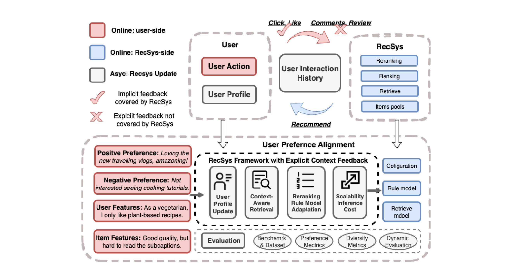

Toward User Preference Alignment in LLM Recommendation via Explicit Context Feedback 是一篇面向 LLM 推荐系统的 vision / framework paper。论文入口：arXiv:2605.29141，arXiv 页面显示提交时间为 2026-05-27，备注为 Published in CogMI 2025；作者包括 Weizhi Zhang、Wooseong Yang、Yuxin Cui、Zhaohui Guo、Hins Hu、Liangwei Yang、Henry Peng Zou、Qifei Wang、Hanqing Zeng、Jiayi Liu、Yinglong Xia 和 Philip S. Yu。PDF 首页标注机构为 University of Illinois Chicago 与 Meta，因此本文按用户指定目录暂记为“多校/多机构”，但从作者机构页脚看主要合作方是 UIC 与 Meta。代码/项目页状态：arXiv 页面没有给出可核验的独立 GitHub、项目页或数据集页；本文也不是提出可直接复现模型的实验论文，而是提出显式上下文反馈在 LLM 推荐系统中的研究路线。
1. 背景和问题
这篇论文想解决的不是“再把一个 LLM 接到推荐系统里做 next-item prediction”，而是指出当前推荐系统在用户偏好对齐上长期存在一个被低估的输入缺口：系统大量使用点击、观看、购买、评分、停留时长这类隐式信号，却很少真正吸收用户用自然语言留下的显式上下文反馈。作者把这种显式反馈定义得比较宽，包括评论、review、文本 critique、用户对内容的解释性评价、负反馈原因、身份声明和物品层面的质量描述。它们和简单的 implicit feedback 不同：点击能告诉系统“用户接触过什么”，但评论常常告诉系统“用户为什么喜欢、为什么厌恶、什么条件下愿意接受、哪些点是硬约束”。论文开头用一个直观例子说明这一点：用户可能多次购买某类食品，但评论里写“对我来说有点太甜”。如果系统只把购买行为当作正反馈，就会继续强化甜味商品；如果系统理解这句话，就会知道“购买”不等于“甜度偏好为正”，真正需要进入用户画像的是“避免过甜”。
传统推荐系统之所以容易忽略这类信号，一方面是因为工业链路长期围绕可规模化的行为日志设计。召回、排序、重排、探索、在线学习和 A/B 指标都习惯把行为转成数值 reward，再通过 CTR、CVR、watch time、GMV、completion rate 或 NDCG/Recall 一类指标优化。另一方面，早期文本建模能力有限，评论和自然语言反馈往往被当成离线解释材料、审核线索或浅层 aspect sentiment feature，而不是贯穿用户画像和在线推荐策略的主监督信号。作者回顾了 review-aware recommendation、aspect extraction、review graph、contrastive review alignment 等方向，承认这些工作已经证明自然语言评论有价值，但指出它们大多仍依赖传统文本编码器或方面抽取模型，尚未充分利用 LLM 的语义理解、推理、记忆和生成解释能力。
论文把问题放在“偏好对齐”语境下，这一点很重要。推荐系统里的 alignment 不只是让模型更会预测下一次点击，而是让推荐结果和用户真实意图、长期价值、当下约束以及解释性理由保持一致。隐式行为天然有歧义：同样一个点击可能是喜欢、误触、猎奇、工作需要、社交压力或被标题吸引；同样一个 4 星评分可能代表“总体不错但有致命缺点”，也可能代表“非常满意但用户评分习惯保守”。如果模型只从行为频率和共现关系里学习，就会把许多“原因”压扁成单一强度，进而放大 filter bubble、popular bias 和过度个性化。作者特别强调，当用户试图通过“不想看这个”“这类内容太重复”“我喜欢心理恐怖但讨厌 jump scare”表达边界时，系统如果继续只听隐式行为，就等于忽略用户主动提供的对齐信号。
从推荐算法角度看，本文的核心问题可以拆成三层。第一层是表示问题：怎样把自然语言中的偏好理由、负约束、身份属性和物品质量描述转成用户画像、物品特征、图关系或 tag，使它们能被召回和排序使用。第二层是链路问题：这些信号应该只在重排阶段做解释，还是要前移到用户画像、召回、兴趣发现、规则模型和异步特征系统中。第三层是评价问题：如果目标是“理解用户明确说过的偏好”，传统命中率指标并不能充分衡量系统是否避开用户显式厌恶、是否满足用户显式偏好、是否在长期上保持新颖性和多样性。因此论文不是提出一个完整可训练模型，而是把显式上下文反馈提升为下一代 LLM-based RecSys 的主要研究对象，并围绕数据、指标、taxonomy 和系统框架给出路线图。
这篇文章的价值也来自它对 LLM4Rec 常见路径的反思。近两年许多工作把 LLM 用作 item metadata encoder、sequence model、zero-shot ranker 或解释生成器，但输入仍然主要是交互历史和物品文本。作者认为这没有充分发挥 LLM 最擅长的自然语言理解能力：如果用户已经用自己的话解释了偏好，LLM 推荐系统不应只把这些话当作可有可无的附加文本，而应把它们转成可更新的 memory、可检索的 rationale、可执行的 constraint 和可解释的 recommendation reason。换句话说，本文真正的问题意识是：推荐系统已经有大量用户声音，但当前算法多数还在听“行为脚步声”，没有系统地听“用户自己说的话”。
因此，本文的“问题”并不是缺一个更大的排序模型，而是缺一条从用户语言到推荐决策的可信通道。这个通道要同时满足三件事：能理解语义细节，能被线上系统低成本调用，能被新的对齐指标检验。后文所有 taxonomy、benchmark 和框架设计都围绕这三件事展开。
2. 方法
2.1 从隐式行为到显式理由：论文真正改造的对象
本文的方法不是一个单点模型，而是一套围绕显式上下文反馈重构 LLM 推荐系统的框架。作者先对现有推荐范式做横向回顾：content-based recommendation 使用 item metadata、用户属性和语义相似度，优点是可解释、冷启动友好，但容易受静态特征限制，也无法捕捉行为序列和偏好变化；collaborative filtering 和 graph-based recommendation 利用用户-物品交互图、矩阵分解、NCF、LightGCN 或图自监督学习建模群体行为，优点是能发现共现结构和高阶连接，缺点是交互本身缺少理由，容易受评分偏差、冷启动和流行度偏差影响；sequential recommendation 和 LLM-based RecSys 进一步建模时间序列、最近兴趣和物品文本，但多数仍把 LLM 用在 item metadata 编码、交互历史提示或零样本排序上，没有把评论、差评理由、身份声明等用户生成文本作为主输入。
作者认为，上述范式的共同盲点是“只知道发生了什么，不知道为什么发生”。显式上下文反馈则恰好补上“why”。如果用户说“我不喜欢 jump scare，但喜欢心理恐怖”，系统不能简单地把 horror genre 置为负偏好；它要把“jump scare”记成负约束，把“psychological horror / suspense / thought-driven thriller”记成正偏好。若用户评价手机“屏幕很惊艳，但电池掉电太快”，系统不能只把 4 星评分当作正样本；它应该把 display quality 作为偏好，把 battery life 作为硬需求或强软约束。若用户说“我是素食者，我喜欢这里的 plant-based options”，系统应把 vegetarian 这类身份属性作为跨域长期约束，而不是只在餐厅推荐里局部使用。也就是说，显式反馈并不是额外文本噪声，而是能把行为标签拆解成方面级偏好、负约束、长期身份和物品质量认知的语义信号。

Figure 1 是全文唯一的框架图，也是理解本文方法的关键。图上半部分画出现有推荐系统的典型闭环：用户产生 action，系统记录 click/like 等隐式反馈并用它们更新交互历史，再通过 item pools、retrieve、ranking、reranking 返回推荐。图中特意把 comments/review 打上红叉，表示这些显式反馈在很多现有链路里没有被覆盖。图下半部分则把显式反馈拆成四类输入：positive preference、negative preference、user features 和 item features；这些输入进入一个带 explicit context feedback 的 RecSys framework，影响 user profile update、context-aware retrieval、reranking rule model adaptation 和 scalability/inference cost。右侧的 configuration、rule model、retrieve model 表明作者并不主张每次线上请求都调用重型 LLM，而是希望把 LLM 理解结果异步转成规则、标签、画像或模型特征，再被低延迟链路消费。底部的 evaluation、benchmark/dataset、preference metrics、diversity metrics 和 dynamic evaluation 则说明，框架不仅要改模型输入，还要改评价方式。这个图的重点不是画了一个复杂架构，而是把显式反馈从“离线解释材料”升级为贯穿用户侧、系统侧、异步更新和评价体系的控制信号。
2.2 四类显式上下文反馈：从自然语言到可执行偏好
论文在 taxonomy 部分把显式上下文反馈分成四类，这个分类是后续系统框架的输入层。第一类是 preferred and positive signals，即用户明确表达喜欢的方面或特征。例如酒店评论里“干净、员工友好”，视频评论里“喜欢这种旅行 vlog”，电影反馈里“喜欢反转结尾”。这类信号比点击更细，因为它不是只说用户喜欢某个 item，而是指出 item 的哪些方面触发喜欢。作者提到 DeepCoNN、NARRE、P5 和 LLM-based user profile management 等相关工作，意图说明正向文本反馈可以被蒸馏成 aspect-level profile，也可以通过 contrastive alignment 拉近用户偏好方面和 item 表示。对工程链路来说，正向信号适合进入用户画像、兴趣扩展和探索策略：当用户明确夸赞一个陌生体裁或新属性时，系统可以把它作为 diversification signal，而不是只沿着历史点击继续推荐相同内容。
第二类是 dislikes and negative signals，即用户明确说不喜欢什么、不能接受什么、希望减少什么。作者把负反馈看成 preference boundary，而不只是训练里的 negative sample。这里的关键是区分 hard constraint 和 soft preference：花生过敏、素食、儿童内容安全这类约束可以直接过滤；“少一点咖啡因”“不要太甜”“不想看太多同质化内容”可能更适合进入重排打分或多样性控制。传统隐式系统很难理解“不点击”背后的理由，因为用户可能没看到、没时间、已看过、标题不吸引或确实不喜欢；显式负反馈则把边界说清楚。作者还提出 negative preference graph 的方向，即用用户-方面之间的 aversion edge 建模负约束，并和正偏好图共同构成 rationale profile。这个设定对推荐系统很有实际意义：负约束通常比正偏好更能决定用户满意度，因为系统反复触犯用户明确厌恶的点，会比少推荐几个喜欢的 item 更快破坏信任。
第三类是 user-specific attributes and contextual factors，即用户在文本里主动透露的长期属性、身份、背景、能力、价值观或短期情境。典型例子包括“我是素食者”“我是专业摄影师”“我更喜欢人写的文章而不是 AI 生成内容”。这类信息和 demographic inference 不同，因为它来自用户自我陈述，可解释性更强，也更容易被用户理解和纠正。作者把它和 LLM memory 设计联系起来：ChatGPT 的 persistent memory、Claude 的 episodic retention，以及推荐系统中的长期用户记忆，都说明自然语言形式的 memory 可以保存稳定偏好，同时通过 continual learning 和 adaptive replay 应对变化。对推荐系统而言，这类属性适合被拆成 structured attributes 与 narrative memory 两种形态：前者方便过滤、召回和规则控制，后者保留用户说法及其理由，方便解释生成和后续更新。
第四类是 item-level comments and quality feedback，即围绕物品本身的综合评价。用户评论“性价比不错，但容易过热、风扇很吵”，既包含正向评价，也包含负向缺陷，还描述了价格、性能、噪音和发热这些可迁移的物品属性。作者认为这类反馈可以通过 opinion graph、aspect polarity、review graph、LLM-based feature induction 等方式聚合为社区级知识，帮助系统形成更客观的 item representation。它和前三类的差别在于，item-level feedback 不一定只服务单个用户画像，还能补充物品特征、质量标签和解释材料。例如很多用户都提到某手机电池差，即使目标用户没说过电池需求，系统也可以在解释和排序中把这个质量信号作为风险提示。这样，显式反馈不仅能做个性化，也能提升物品理解和推荐透明度。
2.3 用户画像构建与动态更新：LLM 作为语义记忆管理器
在 LLM-based RecSys framework 中，第一步是从显式文本反馈构建和更新用户画像。作者的核心设想是让 LLM 充当 comprehension engine 和 memory manager：它读取用户评论、review、反馈语句和当前上下文，把自然语言转成结构化偏好、厌恶、身份属性、方面权重和叙事记忆。例如“too sweet for my taste”应被解析为用户对 excessive sweetness 的负偏好；“as a vegetarian”应被保存为稳定约束；“I prefer psychological horror”则需要和 horror genre 下的子类型、内容标签、情节元素联系起来。这个过程的输出不一定是单一 embedding，可能包括自然语言 profile、key-value memory、typed attribute、user-aspect graph、preference tag 和 affinity score。
这种画像更新有两个技术难点。第一是稳定性和时效性之间的平衡。用户身份属性或长期价值观可能长期有效，但某次评论里的情绪性抱怨、短期场景和临时任务需求不应永久覆盖画像。因此系统需要区分 long-term preference、session-level context、temporary constraint 和 noisy feedback。第二是多源冲突处理。用户可能在不同时间说过相互矛盾的话：以前喜欢某类内容，后来厌倦；在工作场景下偏好专业内容，在休闲场景下偏好娱乐内容；对某属性有条件偏好而非绝对偏好。作者没有给出具体冲突消解算法，但从文中提到的 continual learning、adaptive replay、dynamic heterogeneous knowledge graph 可以推断，理想系统需要带时间戳、置信度、来源类型和关系类型，而不是把所有文本抽取结果压成一条静态 profile。
本文没有核心公式。这里不是我省略了公式，而是 PDF 全文确实没有给出训练损失、打分函数、奖励函数、复杂度公式或评价指标的数学定义。它提出的是概念框架：用 LLM 把自然语言反馈映射到用户画像和推荐链路。若要把这个框架落成可训练系统，可能需要额外设计如下组件：反馈抽取器，把文本解析为 aspect、sentiment、constraint、scope 和 confidence；画像更新器，决定新反馈如何修改已有记忆；召回打分器，把用户 rationale 与 item aspect 表示对齐；重排约束器，把 hard constraint 和 soft preference 作用到 candidate list；解释生成器，把推荐理由回译成用户能理解的话。论文没有把这些写成公式，因此这篇笔记也不伪造数学目标，而把方法章重点放在模块、输入输出和链路关系上。
2.4 上下文感知召回与兴趣发现：把理由前移到 candidate generation
推荐系统链路里，召回阶段决定了后续排序能看到哪些候选。作者强调，如果显式反馈只在最后解释或重排中使用，很多真正符合用户理由的 item 可能在召回阶段已经被漏掉，后面无法恢复。因此 context-aware retrieval 是框架中的核心环节。传统召回通常依赖 user embedding、item embedding、协同过滤邻居、序列兴趣或语义相似度；而反馈奖励的召回应当使用显式画像中的 likes、dislikes、identity cue 和 real-time signal 来选择候选。这样，召回不再只是“和历史点击相似”，而是“和用户明确表达的理由相符”。
作者举的例子是科幻兴趣：用户可能喜欢 sci-fi 不是因为 space battle，而是因为 philosophical themes。一个只看行为共现的模型可能继续召回宇宙战争、太空冒险和视觉特效大片；一个理解显式理由的模型则可能召回更偏思想实验、存在主义、AI 伦理或心理悬疑的作品，甚至跨到相邻领域。这里 LLM 的作用不只是编码文本，还包括 reasoning-infused embedding 和 interest discovery：LLM 可以根据用户知识图谱或偏好记忆探索多跳关系，提出“新颖但仍符合理由”的候选。作者还提到 reinforcement learning 可以奖励这种既 novel 又 consistent with explicit preference 的发现，从而缓解 filter bubble 和推荐疲劳。
这个思路对工业推荐的挑战在于召回必须高吞吐、低延迟，而 LLM 推理成本高。论文没有直接给出线上部署算法，但它把召回和后面的异步 taxonomy 机制联系起来，暗示一种可行路径：离线或准实时用 LLM 解析用户反馈，生成结构化 tag、aspect embedding、negative constraint 和 profile memory；在线召回时使用这些预计算特征，而不是每次请求都调用大模型。这样既能把显式理由前移到 candidate generation，又能控制延迟和成本。对推荐工程来说，这可能比“把 LLM 放在最后生成推荐解释”更有价值，因为召回阶段的覆盖率直接决定系统上限。
2.5 重排、规则模型和硬软约束：让推荐列表服从用户说过的话
召回之后，reranking 负责在候选集合内平衡准确率、多样性、业务目标和用户体验。作者认为显式反馈应当进入 reranking rule model adaptation，尤其是把用户说过的硬约束与软偏好区分处理。硬约束适合 deterministic filtering，例如过敏、素食、年龄不适宜、明确“不想看某类内容”；软偏好适合 proportional score modification，例如“尽量少一点咖啡因”“最近想看轻松内容”“希望更多长电池续航的手机”。这种设计比单纯把评论 embedding 拼进排序模型更清晰，因为它保留了不同反馈类型的执行语义：不是所有文本偏好都应当被同等权重地转成分数，有些应该直接改变可推荐集合。
LLM 在重排中的一个潜在角色是 evaluator 或 judge：它可以综合用户 rationale 和 item features，判断候选是否触犯约束、满足偏好或值得解释。论文引用了 LLM-as-a-judge 相关方向，但没有主张直接让 LLM 每次在线重排全部候选。更合理的理解是，LLM 可以离线生成 rule、label、tag 或 rationale score，在线阶段由轻量模型或规则系统消费。这样，重排列表不仅优化预测准确率，也优化 explicit alignment：推荐项为什么适合用户，不再只因为“相似用户点击过”，还因为“它满足用户明确说过的屏幕质量需求，并避开用户说过的电池短板”。
这里也有一个容易被忽略的风险：显式反馈并不总是越强越好。用户一句负面评论可能只针对某个 item 的特定上下文，不一定代表长期偏好；用户也可能表达讽刺、夸张、情绪化或临时需求。若系统把所有负反馈都当作硬约束，会导致过度过滤和新的 filter bubble。因此重排规则需要保留 source、recency、confidence、scope 和可撤销性。作者虽然没有展开这些工程细节，但它的 taxonomy 为这些字段提供了入口：negative signal、user attribute、item quality feedback 的生命周期和执行方式应当不同。真正可用的系统需要让用户能查看、编辑或纠正这些显式画像，否则“听用户的话”可能变成“误解用户之后长期固化”。
2.6 异步 taxonomy/tag 对齐：用后端 LLM 理解换线上低延迟
论文最后一个方法模块是 asynchronous taxonomy and tag alignment。它回应的是 LLM 推荐系统最实际的问题：线上推荐请求不能每次都等待大模型深度阅读用户评论。作者提出让 LLM 在后端运行，解释用户反馈并映射到不断演化的语义 tag / taxonomy。比如用户称赞手机轻、续航长，系统可以更新 #LightWeightPhone、#LongBatteryLife 等标签及其 affinity score；当用户反馈变化时，LLM 异步更新这些分数。在线 retrieve、ranking 和 reranking 阶段只需要读取预计算的 tag feature、rule model configuration 或 retrieve model feature，从而把深层语义理解和低延迟个性化连接起来。
这个模块让本文从“理念倡议”更接近系统设计。推荐系统通常有多级链路：离线特征工程、近线用户画像更新、在线召回、粗排、精排、重排、解释和反馈回流。显式上下文反馈如果没有 taxonomy/tag 层，很容易停留在 LLM prompt 工程；有了异步标签层，它才能进入成熟推荐基础设施。例如用户对“太甜”的反馈可以映射到 taste/sweetness 方面的负向 affinity，并影响食品召回；用户对“人类写作”的偏好可以映射到 content_origin/human_written 约束，并影响新闻推荐；用户对“电池差”的批评既可以更新该用户对 battery life 的关注，也可以聚合成物品质量标签。
但 taxonomy 机制也带来新的研究问题。第一，标签体系如何演化？如果手工 taxonomy 太粗，就无法表达用户语言的细腻差别；如果完全开放生成 tag，又会出现同义标签碎片化、冷启动标签、跨域不可比和维护成本。第二，affinity score 如何校准？用户一句评论应带来多大权重，如何随时间衰减，如何和点击行为、购买行为、显式评分共同融合。第三，标签和自然语言 memory 如何互相校验？结构化 tag 便于线上使用，但会丢失语气、条件和上下文；自然语言 memory 保留细节，但难以直接进入高吞吐模型。本文没有解决这些问题，但清楚地指出了下一代 LLM RecSys 需要把“可理解”转成“可部署”的中间层。
3. 实验结果
严格说，这篇论文没有传统意义上的实验结果。PDF 全文没有数据集设置、baseline、主结果表、消融实验、效率曲线或显著性检验；paper_audit.json 也确认没有 Table caption。作者的贡献形式是 vision paper：回顾已有推荐范式，提出显式上下文反馈的 taxonomy，设计评价和 benchmark 方向，并给出 LLM-based RecSys framework。因此本章不能伪造成“实验结果最好”或“指标提升多少”，而应讨论论文实际提供的证据类型，以及这些证据对后续研究是否足够。
第一类证据是概念性案例。论文在第三节用三个例子展示隐式反馈的歧义和显式反馈的价值。恐怖电影例子说明，用户不喜欢 jump scare 并不等于不喜欢 horror；手机评分例子说明，正向总体评分中可能同时包含屏幕偏好和电池负约束；素食者和人类写作偏好例子说明，用户文本可以暴露长期身份、价值观或跨域约束。这些例子不是定量实验，但它们帮助界定了显式反馈能提供的额外信息：aspect-level sentiment、nuanced genre preference、identity cue 和 value-based constraint。对 vision paper 来说，这些案例足以说明问题存在，但还不足以证明框架在真实系统里能提升指标。
第二类证据是 benchmark 和 metric 设计。作者认为现有 MovieLens、Amazon Review 等数据集常被用于预测 held-out interaction、rating 或 ranking accuracy，评价指标也集中在 RMSE、Recall、NDCG 等。这些指标并不直接衡量系统是否遵守用户明确表达的 likes/dislikes。论文提出反馈增强数据集方向：在交互序列中加入用户 textual feedback，形成连续的 sequential recommendation with user feedback 任务。系统在每一步接收新反馈后，需要更新用户画像和推荐结果。这比静态评分预测更贴近真实场景，因为用户偏好会随着评论、弹幕、批评和情境变化而动态调整。
第三类证据是新指标提案。作者提出 dislike avoidance rate，用来衡量推荐列表中有多少 item 没有包含用户明确厌恶的属性；提出 preference fulfillment score，用来衡量推荐项满足用户显式偏好方面的程度。举例来说，用户说“我喜欢 surprise twist endings”，那么 top-N 推荐是否主要包含这类电影，就可以作为 preference fulfillment 的检测对象。这些指标的意义在于，它们把评价目标从“系统猜中用户下一次互动”转向“系统有没有听懂用户说过的条件”。当然，指标落地需要 item aspect label、manual annotation 或 LLM classifier，否则很难判断某个 item 是否真的包含 jump scare、twist ending、long battery life 或 human-written content。
第四类证据是 diversity、novelty 和 temporal adaptability 的评价主张。作者认为显式反馈可以帮助系统打破信息茧房，因为它提供了比历史行为更丰富的兴趣解释。例如用户明确说自己喜欢心理恐怖，系统可以在保持相关性的同时引入 suspense、thriller、philosophical sci-fi 等邻近内容，而不只是重复过去点击过的 horror item。论文建议用 diversity、novelty 和 temporal adaptability 衡量系统是否能随着显式反馈变化而调整推荐。这一点和传统 accuracy-only evaluation 有明显区别：如果系统只追求短期点击，可能更容易陷入窄兴趣循环；如果系统尊重用户显式理由，就可以更主动地做 calibrated diversification。
从证据充分性看，本文的短板也很明确。它没有构造新数据集，没有实现框架，也没有和现有 LLM4Rec、review-aware RecSys、LLM user profile management 或 feedback alignment 系统做定量对比。它提出的 dislike avoidance rate 和 preference fulfillment score 仍停留在定义层面，缺少具体标注协议、LLM judge 校准方法、指标鲁棒性分析和与业务指标的相关性验证。它提出的异步 taxonomy 机制也没有成本评估，例如 LLM 更新频率、标签数量、在线延迟、召回覆盖率、用户画像冲突处理和隐私合规开销。因此，如果把本文当作“方法论文”，实验是不完整的；如果把它当作“研究议程”，它的价值在于把未来实验应该测什么、数据该怎么补、系统链路该往哪里改讲清楚。
对推荐算法研究者而言，后续最自然的实验路线有三条。第一，构造带显式反馈的 sequential benchmark：每个用户有 interaction timeline、文本反馈、aspect label 和后续行为，比较只用隐式信号、加入 review encoder、加入 LLM profile memory、加入 taxonomy/tag 的模型差异。第二，在真实或半真实数据上测试负约束遵守能力：给定用户明确 dislikes，评估 dislike avoidance rate、NDCG、多样性和用户满意度之间的 trade-off。第三，评估异步 LLM 标签系统：比较每次在线调用 LLM、离线抽取 tag、近线更新 profile 和纯传统特征在延迟、成本、召回覆盖、解释质量上的差别。只有这些实验补上之后，本文的框架才能从 persuasive vision 变成可复现系统。
还需要注意，本文提出的指标之间可能互相拉扯。更高的 dislike avoidance rate 可能降低短期点击，因为系统会主动避开一些历史上点击率高但用户已明确厌烦的内容；更高的 novelty 和 diversity 也可能牺牲一部分即时相关性。未来实验不能只报告单一指标提升，而应展示准确率、显式偏好满足、负约束避让、多样性、延迟和用户可解释满意度之间的曲线。
4. 总结
4.1 我的判断
这篇论文最有价值的地方，是把“用户用文字说出的理由”放回推荐系统主链路，而不是继续把 LLM 推荐理解成更强的 item text encoder 或更会写解释的 reranker。它的核心判断是对的：隐式行为足够规模化，但天然缺少原因；显式上下文反馈规模更小、更噪，但包含偏好边界、价值约束和可解释理由。LLM 的优势恰好是理解这些自然语言理由，并把它们转成用户画像、召回特征、重排规则和解释材料。对于 LLM4Rec 方向，本文提醒研究者不要只把大模型接在已有行为日志后面，而要重新审视推荐系统本来就拥有但没有充分使用的用户文本。
我也会把它定位为“问题定义和路线图论文”，而不是可直接复现的算法论文。它没有训练公式、实验表格和开源代码，因此不能支撑“某个方法优于某个 baseline”的结论。它更像给后续工作列出研究空间：怎样定义显式反馈，怎样建反馈增强数据集，怎样评价偏好对齐，怎样让 LLM 理解结果进入低延迟推荐链路。如果读者期待的是可以马上实现的模型结构，本文会显得抽象；如果读者正在做用户画像、LLM4Rec、评论理解、负反馈学习、推荐解释或多目标重排，它提供的 taxonomy 和系统分层很适合作为需求拆解框架。
4.2 工程启发与复现建议
工程上最值得优先尝试的不是端到端让 LLM 生成推荐列表，而是做一个“显式反馈到画像/tag”的近线服务。第一步可以从评论和差评中抽取 aspect、sentiment、constraint_type、scope、confidence 和 timestamp；第二步把它们写入用户画像和物品标签；第三步在召回或重排中加入 hard constraint filter、soft preference boost 和 explanation reason；第四步用 dislike avoidance、preference fulfillment、diversity、novelty 与传统 CTR/CVR 指标一起评估。这样做比直接让 LLM 在线重排更容易控制成本，也更符合现有推荐系统的模块化结构。
复现或延展本文时，我建议先选一个评论丰富且 item aspect 可标注的场景，例如电影、餐厅、电商商品或短视频。数据上需要同时保留 interaction、rating、review/comment、item metadata、后续行为和显式负反馈。模型上可以设置四组 baseline：只用隐式行为；用传统 review encoder；用 LLM 抽取 profile memory；用 LLM 抽取 profile 加 taxonomy/tag 并接入召回/重排。评价上不要只看 NDCG，还要看明确厌恶属性的避让率、明确喜欢属性的满足率、列表多样性、长期留存或模拟满意度。这样才能检验本文真正关心的“alignment”是否发生，而不是只证明文本特征又提升了一点排序准确率。
4.3 局限与后续跟进
本文的局限至少有四点。第一，缺少定量实验和开源实现，因此框架的有效性、成本和鲁棒性都还没有被验证。第二，显式反馈本身有噪声、讽刺、情绪化、上下文依赖和时效性，论文没有详细讨论如何判断置信度、作用范围和过期机制。第三，用户隐私和可控性讨论不足；显式文本常包含身份、价值观和敏感偏好，系统如何保存、解释、删除和让用户纠正这些记忆，是实际部署前必须解决的问题。第四，taxonomy/tag 对齐虽然是可扩展方案，但标签体系维护、同义合并、跨域迁移、标签爆炸和 affinity 校准都可能成为工程瓶颈。
后续可以重点跟进三类问题。第一，数据集和评价：是否会出现带时间线评论、显式偏好标签和后续行为的公开 benchmark，以及 dislike avoidance / preference fulfillment 是否能被稳定标注。第二，系统实现：是否有工作把 LLM 抽取的显式反馈真正接入召回、粗排、精排或重排，而不是只做解释生成。第三，用户控制：是否能把显式画像展示给用户，让用户确认“系统认为我讨厌 jump scare、重视电池续航、是素食者”这些记忆是否正确。只有当用户能看见并修改系统理解，显式反馈驱动的偏好对齐才不会变成新的黑箱。